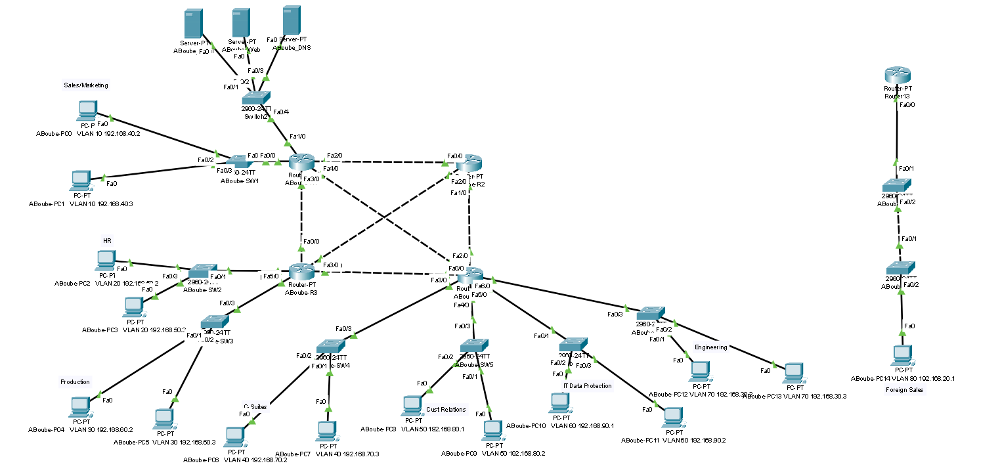

Enterprise Network Design
LINKS
OVERVIEW
The project required creating a resilient and segmented network supporting 250+ users across multiple departments, while protecting sensitive intellectual property and ensuring secure inter-office communication. Using Cisco Packet Tracer, I developed a layered network design with VLAN-based segmentation, secure routing, redundancy, and role-based isolation to meet business, security, and availability requirements.
CONTENT

KEY ACHIEVEMENTS
- Architecture — Designed a dual-location network with headquarters in the U.S. and a branch office in Germany, implementing a secure inter-office connection to protect sensitive data and communications across geographically separated sites.
- Segmentation — Configured VLANs to isolate eight business departments based on functional roles, enforcing separation between networks and preventing inter-VLAN communication to reduce attack surface and protect restricted data.
- IP addressing & Subnet — Planned and assigned IP addressing using multiple address spaces, including internal subnets (192.168.1.0/24), core routing networks (10.10.10.0/28), and public-facing networks (7.7.10.0/28), ensuring scalable and logically segmented network communication.
- Service Deployment — Deployed and validated core network services including DNS, web, and email servers, ensuring proper service availability to all authorized systems within each site.
- Impact — The project reflects practical experience in designing networks that protect sensitive business data, enforce least-privilege access, and support operational continuity across geographically distributed offices.